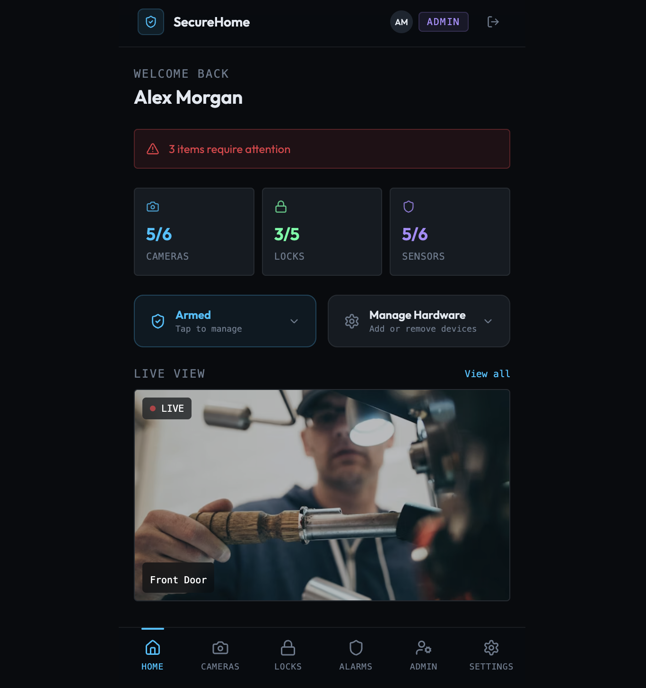
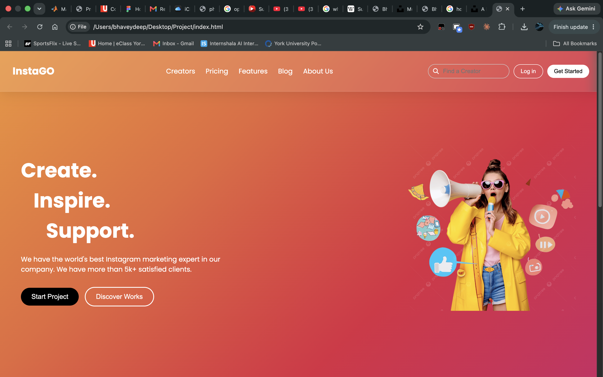

Smart-home App
A high-fidelity home security application prototype designed to monitor cameras, locks, and sensors with a focus on usability and user experience.

Inventory Manager
A Java-based inventory management application that allows users to track products, manage stock levels, and interact with data through a graphical interface.

Clothing Website
A responsive clothing e-commerce website featuring modern layouts, product displays, and user-friendly navigation built with web technologies.

Influencer/fans Website
A web platform designed to connect influencers with their audience through content sharing, user interaction, and engaging interface design.

To-do List
A Java desktop application that helps users organize tasks, manage deadlines, and improve productivity through a simple graphical interface.
No projects found in this category